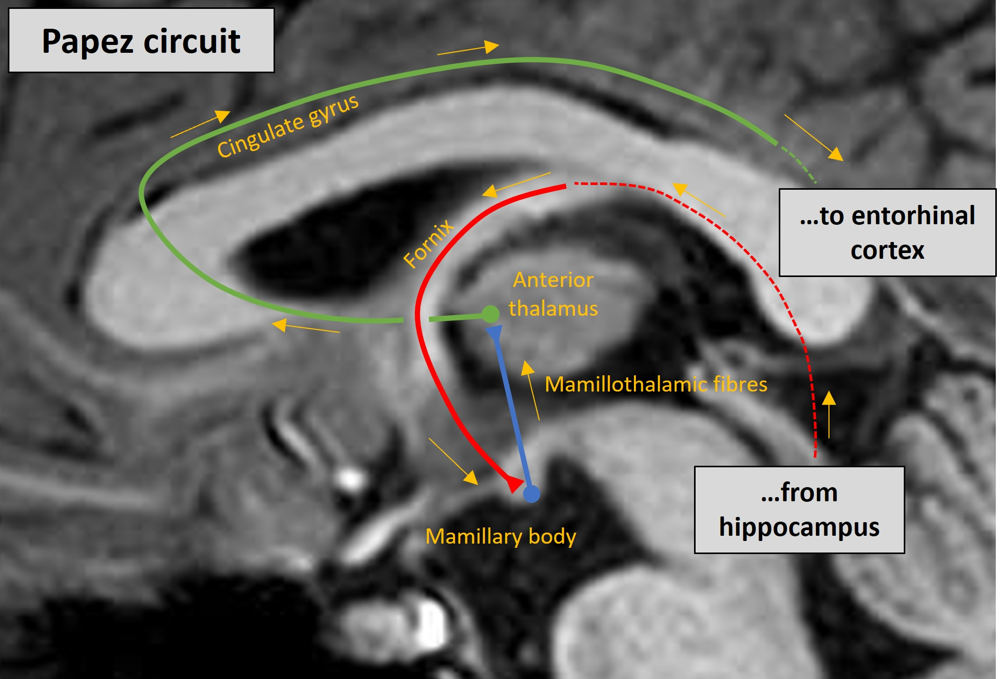
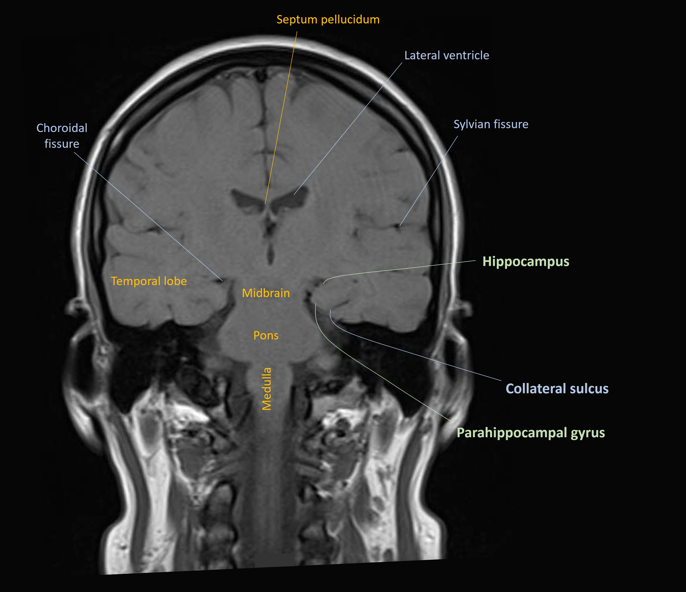
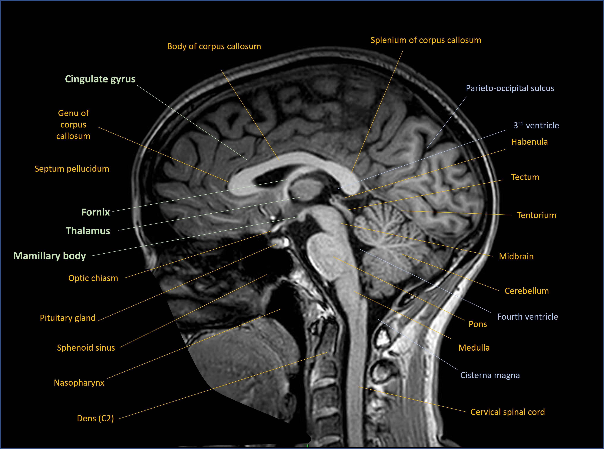
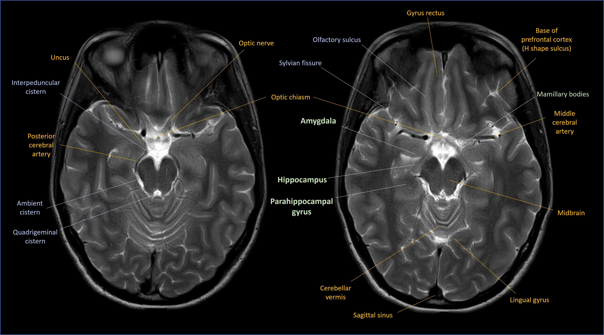

Case 19 - Memory problems
Where is the lesion?
This patient has a new-onset cognitive disorder. The problem is anterograde episodic amnesia - she cannot make new memories regarding things that are happening to her or that people are telling her. It's an isolated problem as other cognitive domains seem intact: she can use language normally (spoken, written and understood), perform tasks involving visuospatial skills, use logic (i.e. display executive function to solve problems), and is generally orientated. There are also no behavioural features suggestive of frontal lobe disease (e.g. disinhibition or loss of interpersonal warmth). This is an isolated amnesia, sustained for 3 weeks.
There was one other symptom which isn't cognitive as such - sleep-wake cycle disturbance, unusual for her, which may also be a localising clue. Beyond that though, there is nothing suggestive of focal deficits that might localise.
We need to think about how memory works and what parts of the nervous system are involved in it to approach this case properly.
MemoryMemory is divided into two categories: declarative and implicit. They work quite differently.
Declarative memory is conscious knowledge - you can 'declare' what you remember. There are two type of this:
Implicit memory concerns things we know on an unconscious level - such as of muscle memory for procedures like riding a bike. This might have been learned consciously at one point, but you eventually know it on an 'unconscious' level. In neurology this includes skills such as gait or sophisticated motor skills, and involves various systems - such as the basal ganglia, cerebellum, and the cortex (e.g. premotor areas and parietal lobe). We don't tend to speak of people with problems in these as having 'an implicit memory deficit' - the term is more used for conceptualising types of learning and knowledge.
This patient has an episodic memory problem, but no semantic memory issues, and there's nothing to suggest any other loss of implicit knowledge. She burned her dinner, but due to forgetting about it, and can still cook, dress and use appliances.
Episodic memory - short-term, long-term, working memory and other termsThere are some inconsistently used terms here that it'd help us to break down so we have a model of this system.
Recall is the ability to repeat information a person has heard before. It can either be immediate or delayed.
When information is presented, for example 3 items are listed to repeat, this is testing immediate recall. If the person is asked to repeat them again after an interval, for example they're given another task then asked to repeat the items - this is testing delayed recall.
The confusion then comes when we introduce the terms short-term memory and long-term memory. The latter sounds as if it only applies to thngs we are remembering from some time ago (days or more) - this is wrong. It's actually anything we are remembering after an interval - in other words, delayed recall.
People use short-term memory to imply a sort of middle ground intermediate timescale - not immediate, but after a delay of a few minutes - and long-term to refer to things from much earlier, but this isn't correct. Long-term starts after very short intervals only, while its upper limit - in terms of how long after a stimulus it can be recalled - can be lifelong.
Short-term memory is really just the immediate phase - up to about 30 seconds, without something breaking the focus such as another task we have to do. It relies on attention, and if someone has attention issues they very often present as having a poor memory. That's because they never properly took the stimulus in to begin with - their immediate recall would be essentially zero - so it's no wonder the can't reproduce it at a later stage.
Working memory is related to short-term memory and refers to actively keeping things in the mind while mentally manipulating them, for example a list of numbers being repeated. We use this while taking in complex information - you probably are doing so now.
Short-term and working memory serve the purpose of immediate usage. To lock these memories in and be able to recall them later, we have to convert them to long-term memory.
There is a neurological process involved in this conversion, as the memories shift from our immediate retention to a sort of 'holding area' where they stay for a period of time before eventually being filed away permanently.
When that process is disrupted - by anything - the result is anterograde amnesia; people cannot make new memories. In the moment, the patient appears to take things in and remember them - they are not confused, inattentive or otherwise cognitively impaired. Then after a short interval, they can't remember these things, and may not even remember having ever heard of them at all.
How this manifests includes things like:
A very large number of 'memory problems' we see in neurology are actually attention problems and it takes some skill to distinguish the two. People misplace items, forget things they were told or leave the oven on, but this is due to limited attention being paid at the time - they are usually overloaded mentally, whether from multi-tasking, tiredness, stress or something distracting them. If you've ever zoned out while reading these cases then struggled to remember the earlier details, it's because you lost focus. If you actually had focused 100%, then perhaps there was simply too much information for your system to encode and recall later - though I hope not!
However, intact immediate recall and significantly impaired delayed recall is highly concerning, suggesting a failure of the process of converting short- to long-term memories. This is not an attention problem as the initial recall was normal.
That is exactly what is happening in this patient's case and clearly something serious is underlying it.
How new memories are madeIt's often too simple to assign a specific neurological function to one part of the brain alone - the brain is made up of networks. Lesions in different sites within the network can produce the same deficit. Bar some very specific localising deficits, many disorders are like this. It's hard to localise things exactly because the problem could be anywhere along the path, which may consist of multiple connected parts. What helps us localise the lesion is what else is seen (or isn't) - i.e. cross-localising with other findings - when this is possible.

There isn't a single 'memory part' of the brain, nor for other cognitive domains. Networks connect multiple regions of the brain and disruption to these at various points can lead to a problem in that particular cognitive modality. There may be other features also present due to additional nearby structures being damaged.
New memories are made using the Papez circuit. This involves multiple connected parts of the brain. The ultimate destination for memories to be ‘filed’ is the cortex, but the Papez circuit hardware enables their ‘recording’. Damage to its components can lead to amnesia.

The most famous part of this circuit is the hippocampus - a seahorse-shaped area of cortex. We have two, one in each of the mesial temporal lobes on either side. Note that for the temporal lobe the term ‘mesial’ is generally used rather than ‘medial’. The following scans show the key anatomy in coronal, sagittal and axial views respectively.



The hippocampus is where the Papez circuit starts. The hippocampus is involved in multiple diseases that cause memory problems - the most famous being Alzheimer's, in which pathology affects it early on - and hippocampal atrophy is visible on MRI even at an early stage.
The hippocampus sends efferent neurons out into the Papez circuit via the fornix, which is its outflow system. The fornix is a curved structure which is located in each hemisphere. It loops back, up and inward, fusing with its twin from the opposite hemisphere, then travels forward and finally separates into two pillars which drop down again on the front side of the third ventricle. The hippocampal projection fibres from the fornix then synapse in the mamillary bodies on each side.
The mamillary bodies then send mamillothalamic projections to the anterior nuclei of the thalamus, where they synapse. Of note though, there are other parts of the thalamus which are relevant to memory, including the dorsomedial and pulvinar components - lesions there can also produce amnesia.
The anterior thalamus sends fibres out to the cingulate gyrus, above the corpus callosum. The cingulate then returns signal down to the temporal lobes in the parahippocampal gyrus (the entorhinal cortex), and from there it loops back to the hippocampus.
Disease at any level of this can lead to anterograde amnesia with similar characteristics. However, as above - we can sometimes localise further if there are additional features present that tell us the problem must be where the Papez circuit is adjacent to other structures that produce this deficit.
The Papez circuit is part of the limbic system. The limbic system also contains structures relevant to emotions, including intense and primitive states such as fear and arousal, and behavioural responses to them. It contains very old hardware from an evolutionary perspective. Sometimes there are clinical features suggesting limbic disease.
The amygdala is an important component, and the cingulate also has a role in how we process emotions. Cingulate lesions can sometimes render a patient indifferent, with no reaction or motivation arising as a result of experiences. This is also induced surgically to treat intractable pain (cingulotomy) - the pain doesn't cease, but the emotional reaction to it is blunted. So limbic damage can produce 'negative' deficits from loss of function.
At the opposite end, ‘positive’ limbic system symptoms include the fear and anxiety that can be experienced in seizures involving the amygdala or cingulate gyrus - the system expressing itself abnormally.
The other aspect of the limbic system is autonomic function, and diseases of the limbic system can have autonomic manifestations – whether brief (e.g. piloerection or bradycardia/asystole in seizures) or more profound (dramatic autonomic dysregulation seen in inflammatory encephalitis affecting the limbic system).
However, in this case, there aren't any obvious markers of these - behavioural or motivation changes, nor seizures or autonomic lability.
Damage elsewhere such as the thalamus can have a range of complicated effects including aphasia, somnolence, sensory disturbance and eye abnormalities, so this is sometimes a localising clue.
We have little else to help us here other than the sleep-wake cycle alteration, which is probably relevant. Sleep-wake physiology is complicated, but in this context, could be a clue - certain limbic disorders can produce disturbance in the cycle.
This patient's lesionThere's evidently a problem in the Papez circuit and limbic system causing anterograde amnesia. We've little else to help us localise this - for example seizures - but we can think further now about the type of process that comes on in this timescale and affects this circuitry.
What is the lesion?